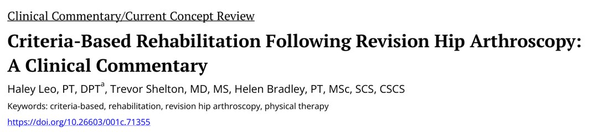
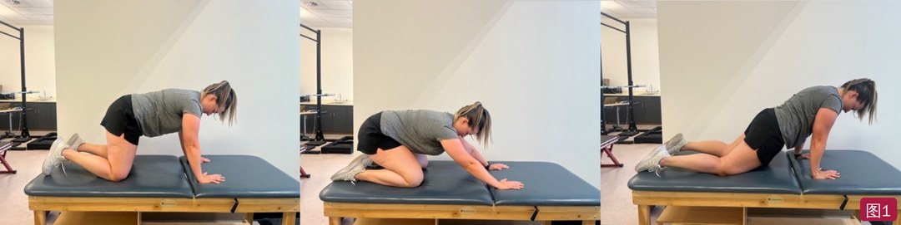
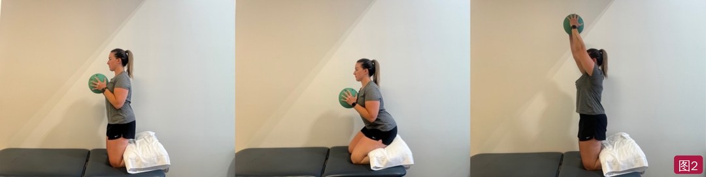
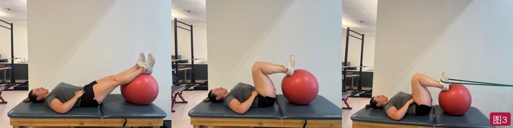
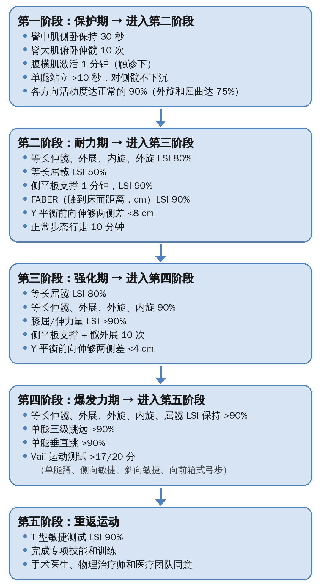
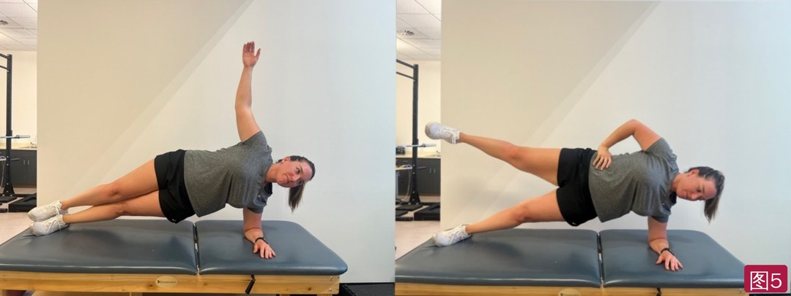
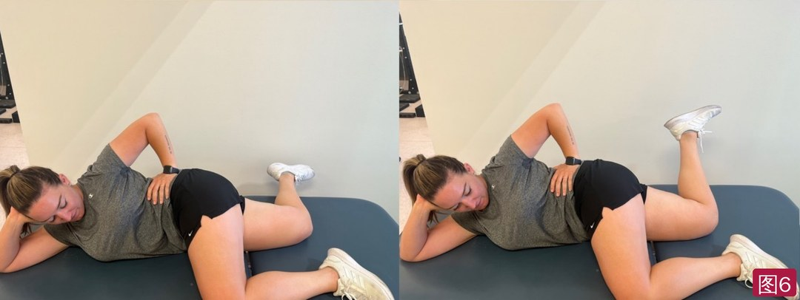
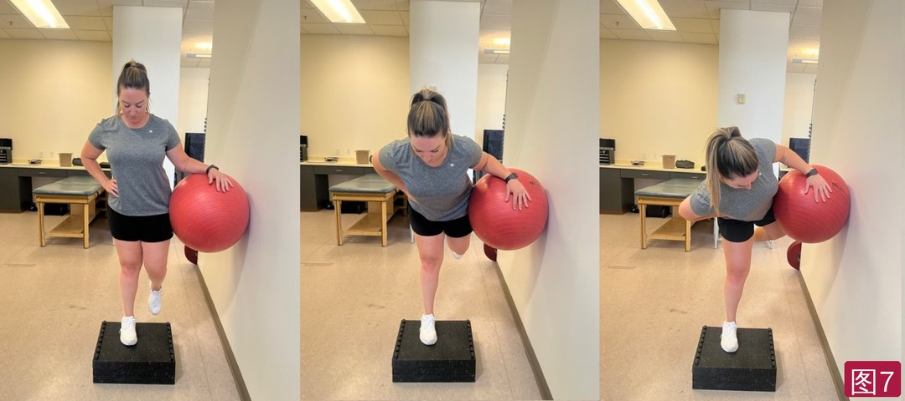

🔖原文首页（IJSPT 2023 年第 18 卷第 2 期）
📚 文献卡片
▪ 英文原题：Criteria-Based Rehabilitation Following Revision Hip Arthroscopy: A Clinical Commentary（髋关节镜翻修术后基于标准的康复：临床评论）
▪ 作者：Haley Leo, PT, DPT · Trevor Shelton, MD, MS · Helen Bradley, PT, MSc, SCS, CSCS
▪ 机构：Howard Head 运动医学中心（美国科罗拉多州）
▪ 期刊：International Journal of Sports Physical Therapy（IJSPT）
▪ 年卷期：2023;18(2):477-492
▪ PMCID：PMC10069339
▪ 文章类型：临床评论 / 当前概念综述
▪ 证据级别：5 级
▪ 关键词：criteria-based · rehabilitation · revision hip arthroscopy · physical therapy
髋关节镜手术近年快速增加，4%～10% 的初次手术最终需要翻修，初次与翻修之间平均约 2 年。翻修最常见的原因是残留骨性撞击（术前影像中近 80% 有此表现）、盂唇撕裂、软骨损伤、微不稳和过度瘢痕。
微不稳可能来自 FAI 本身，也可能是软组织不足造成的——盂唇清理后功能不全、关节囊切除、骨性撞击切除过多。过度的生理活动会成为疼痛源，并让关节囊和盂唇进一步受损。
• Thorborg 等：初次术后 1 年功能有临床意义的改善，但仍不及健康人
• 做髋关节镜的外科医生中，不到 30% 会给患者康复方案；而且支具、负重、活动度限制、重返时间差异很大
• ACL 领域：采用基于标准的进阶，再伤风险可降低 4 倍；肩稳定术后，很多人到了“预期恢复时间”仍未通过标准测试
翻修患者往往疼了几个月甚至几年，代偿模式根深蒂固，组织愈合也不一定按常规时间表走。因此作者提出一套以标准为主、兼顾时间的五阶段康复进阶：保护 → 耐力 → 力量 → 爆发力 → 重返运动。
| 阶段 | 重点 | 训练参数 | 进入下一阶段的关键标准 |
|---|---|---|---|
| Ⅰ 保护 | 保护愈合组织、控制肿痛、在限制内恢复活动度、激活臀肌 | — | 侧卧臀中肌保持 30 秒；单腿站立 >10 秒骨盆不下沉；活动度达正常 90% |
| Ⅱ 耐力 | 正常步态、日常活动、肌耐力 | 3 组 × 15～20 次，每周 2～3 次 | 等长伸/外展/旋转 LSI 80%、屈髋 50%；Y 平衡前向差 <8 cm；正常步态 10 分钟 |
| Ⅲ 力量 | 加大负荷，臀肌和深层外旋肌 | 3～6 组 × 3～5 次，60%～80% 1RM（RPE 6～8/10） | 屈髋 LSI 80%、其余 90%；膝屈伸 >90%；Y 平衡前向差 <4 cm |
| Ⅳ 爆发力 | 发力速率、增强式训练 | 3 组 × 3～6 次，轻中负荷，每周 2～3 次 | 等长力量 LSI >90%；三级跳、垂直跳 >90%；Vail 测试 >17/20 |
| Ⅴ 重返运动 | 专项动作，逐步回到比赛 | — | T 型敏捷测试 LSI 90%；医疗团队同意 |
一句话概括：翻修患者别按时间表走——每一阶段都用客观标准把关，边练边纠正多年的代偿模式。
| FAI 类型 | 特点 | 常见损伤 |
|---|---|---|
| 凸轮型（cam） | 股骨头非球形，屈髋时撞击 | 盂唇撕裂或从髋臼缘撕脱，髋臼软骨损伤 |
| 钳夹型（pincer） | 髋臼过度覆盖，可伴髋臼过深或后倾 | 盂唇退变、骨化，股骨头颈部软骨损伤 |
| 混合型 | 两者兼有 | 盂唇及髋臼和/或股骨头颈软骨损伤 |
FAI 常伴髂前下棘撞击、髂腰肌撞击、运动性耻骨痛、圆韧带撕裂等。
• 目标：恢复盂唇的“负压密封”功能和髋关节生物力学，减少活动时的压应力、保护软骨
• 多数翻修病例盂唇与关节囊之间有粘连，需要术中处理
• 盂唇怎么处理取决于质量：质量好、粘连少 → 修复；有环形纤维但不足 → 增强（保留神经和血供，利于移植物愈合）；没有环形纤维 → 重建（节段或全周，自体或异体移植物）
• 同期处理合并问题：切除不足者补充骨成形；切除过多者用填充术（remplissage），取髂胫束或阔筋膜张肌填补；处理软骨缺损、松解粘连、修复或重建关节囊缺损
• 关节囊盂唇隐窝血供丰富、易粘连，粘连严重者可能需要在盂唇与关节囊之间放“间隔移植物”
目标：保护愈合组织（支具、活动度限制、负荷管理）、控制炎症和疼痛、在限制范围内最大化活动度以减少粘连、开始肌肉激活，并恢复睡眠、精力、情绪、营养等基础状态。
• 限制伸髋和外旋：减少前关节囊、盂唇修复和切口的张力；限制主动屈髋：减少屈髋肌负担
• 负重减少，具体由术者决定；与初次手术相比，限制负重的时间可能更长，尤其做了微骨折时
• 各项限制高度个体化，应按每位患者的术后限制来安排活动度、负重和训练
表1 翻修髋关节镜常见手术组合与术后限制
| 项目 | 翻修髋关节镜（含盂唇修复/增强、填充术、关节囊折叠等） | 翻修 + 微骨折 | 翻修 + 臀中肌修复 |
|---|---|---|---|
| 活动度限制 | • 屈髋：2 周内不坐到 90°；不做主动屈髋 • 伸髋：17 天内不超过中立位 • 外旋：21 天内不超过中立位 • 外展：0°～45°，14 天 • 内收：不限 • 内旋：不限 | • 屈髋：2 周内不坐到 90°；不做主动屈髋 • 伸髋：17 天内不超过中立位 • 外旋：21 天内不超过中立位 • 外展：0°～45°，14 天 • 内收：不限 • 内旋：不限 | • 屈髋：2 周内不坐到 90°；不做主动屈髋 • 伸髋：17 天内不超过中立位 • 外旋：21 天内不超过中立位 • 外展：10°～30°至 45°，21 天 • 内收：21 天内不超过外展 10°～30° 位 • 内旋：不限 |
| 支具 | 17 天 | 17 天 | 17 天 |
| 负重 | 20 磅 × 10～14 天，然后逐步撤拐 | 20 磅 × 约 6 周，然后逐步撤拐 | 20 磅 × 10～14 天，然后逐步撤拐 |
| 体位 | 4 周内不俯卧，避免牵拉前关节囊 | 4 周内不俯卧，避免牵拉前关节囊 | 4 周内不俯卧，避免牵拉前关节囊 |
本表列出作者常见的翻修手术组合及其限制；20 磅约 9 kg。
• 翻修手术时间长，术后关节积液明显，会通过关节源性和神经源性抑制影响肌肉激活
• 手法治疗如淋巴引流按摩帮助消肿；CPM 使关节内压力周期性变化，起到“泵”的作用，把血液和水肿液带离关节
• 拆线后做瘢痕松动，预防粘连
• 被动环转是术后早期标准做法：不做环转的髋，瘢痕形成增加 4.1 倍
• 氯沙坦（Losartan）越来越多用于髋部术后：改善软骨缺损，并通过阻断 TGF-β1 减少术后纤维化

🔖图1：四点跪位后坐（Quadruped Rock Backs）——从四点跪位移动到婴儿式，再到改良平板支撑位，用于在多数手术限制范围内做髋的主动活动
• 维持额状面骨盆稳定所需的外展力，70% 来自止于大转子的肌肉
• 步态中伸髋越大，髋前方受力越大；臀肌伸髋力量和髂腰肌屈髋力量下降，都会增加髋前方关节受力
• 常见代偿：臀大肌弱 + 腘绳肌、腰伸肌过度活跃；臀中肌弱 + 阔筋膜张肌过度活跃；深层髋旋转肌和前侧核心无力
• 让患者自评“哪里在发力/哪里累”，能帮助识别代偿，也提高对动作的内在觉察

🔖图2：臀推——高跪于治疗床尾，踝放在床外以求舒适；臀部坐向足跟（可垫枕头），然后激活臀肌伸髋。可加药球增加动态负荷和核心激活（解除负重限制后使用）
• 训练从辅助主动过渡到主动活动，重点是肌肉激活正确
• 组织愈合允许后，术后 2 周可以开始主动屈髋
• 腰大肌常被认为“用得太多”，但它对屈髋和日常活动很重要。髋滚球（图3）用于促进腰大肌次最大激活：触诊发现越偏外越偏股直肌，越偏内越偏腰大肌

🔖图3：髋滚球——仰卧，双腿放在大球上，激活髂腰肌把球向内拉（凭经验触诊位置更偏内侧），可用手触诊肌肉激活
进阶标准
臀中肌侧卧保持 30 秒；臀大肌俯卧伸髋 10 次；腹横肌激活 1 分钟（触诊下）；单腿站立 >10 秒对侧髋不下沉；各方向活动度达正常的 90%（外旋和屈曲达 75%，因早期有手术限制）。
这一阶段不适合测力计，所以用俯卧伸髋、腹横肌激活和侧卧保持来评估肌肉功能，并发现腘绳肌、背阔肌、屈髋肌的代偿。

🔖图4：基于标准的进阶流程图（原图为英文，已按原内容中文重绘）
重点是建立肌耐力，使患者能无痛、无代偿地完成日常活动。目标：主动活动度与健侧一致，髋部肌耐力足以过渡到完全负重、无痛性步态，并重建关节和组织对负荷的耐受。训练按耐力参数：3 组 × 15～20 次，每周 2～3 次。
• 用 FABER（屈曲-外展-外旋）体位逐步恢复功能性外旋，并重新适应以前诱发疼痛的姿势；腰大肌张力或保护性紧张可用 PNF 的轻柔收缩-放松，利用交互抑制缓解
• 轻柔关节松动可调节疼痛；使用高级别松动前，要先确认受限是关节囊性而非骨性——比较伸髋位（关节囊紧张）和屈髋位（肌肉紧张）的内外旋差异
• 内收肌、腰大肌、阔筋膜张肌的疼痛和高张力容易被忽视，需要手法处理
• 步态：负重增加要循序渐进，可用体重秤控制负重百分比；从双拐到单拐可能需要数周；泳池步行、水中跑台、减重跑台、TRX 都能逐步加载。撤拐要按标准，不按时间
• 单腿平衡中加入神经认知任务；开链训练加阻力，近端稳定后加入闭链训练；监测疲劳部位和过用信号
• 教育患者“微剂量”安排日常活动：把任务分散到一天或几天完成，减少微炎症（它会引起关节源性抑制）
• Bergmann 等体内测量：以 4 km/h 行走时髋关节负荷为体重的 238%，上楼 251%，下楼 260%；步速加快和跑步还会更高
进阶标准
等长伸髋、外展、内旋、外旋 LSI 80%；等长屈髋 LSI 50%；侧平板支撑 1 分钟、LSI 90%；FABER（膝到床面距离，cm）LSI 90%；Y 平衡前向伸够两侧差 <8 cm；正常步态行走 10 分钟。
等长测试首选手持测力计，没有时以标准体位徒手肌力 4 级代替。Y 平衡前向两侧差 >4 cm 能预测损伤，但作者认为此阶段先用 <8 cm 作为可达成的目标。

🔖图5：侧向躯干耐力测试——侧卧，以肘和（理想情况下）足撑起身体离开床面；与“侧平板支撑 + 髋外展”训练的体位相同，变容易后可抬起上方腿，增加双侧髋外展肌激活和核心稳定挑战
• 训练参数：3～6 组 × 3～5 次，60%～80% 1RM（新手到有经验者）
• 激活 ≥40%～60% MVIC 才有强化效果，约 70% 最理想（增肌）
• 康复中测 1RM 困难且可能不安全，可用主观用力程度（RPE）监控：60%～80% 1RM 约等于 RPE 6～8/10 或 14～17/20
• 本阶段后期加快动作速度，引入发力速率（RFD）训练，帮助患者建立快速移动的信心、减少恐惧，为爆发力期做准备
• 内外旋肌都要强化，尤其深层外旋肌：Tateuchi 等发现深层外旋肌弱时深蹲髋前方受力增加；Meinders 等发现最大激活深层外旋肌可减小髋接触力角度和髋臼负荷（图6、图7）
• 侧平板支撑 + 髋外展的臀中肌激活最高（103% MVIC），所以用它作为测试
表3 常用训练中臀中肌和臀大肌的激活（%MVIC）
| 训练（臀中肌） | Boren | Distefano | Ekstrom |
|---|---|---|---|
| 四点跪伸髋（运动侧） | 22.03 | 42 ± 17 | |
| 蚌式开合（屈髋 45°） | 47.23 | 40 ± 38（屈髋 30°） 38 ± 29（屈髋 60°） | |
| 单腿硬拉 | 56.08 | 58 ± 25 | |
| 侧卧髋外展 | 62.91 | 81 ± 42 | 39 ± 17 |
| 反向蚌式（伸髋 0° + 髋外展至中立） | 76.88 | ||
| *单腿蹲 | 82.26 | 64 ± 24 | |
| *侧平板支撑（同侧） | 103.11 | 74 ± 30 |
| 训练（臀大肌） | Boren | Distefano | Ekstrom |
|---|---|---|---|
| 站立臀肌夹紧 | 80.72 | ||
| 蚌式开合（屈髋 45°） | 53.10 | 34 ± 27（屈髋 30°） 39 ± 34（屈髋 60°） | |
| 单腿臀桥（稳定侧） | 54.24 | 40 ± 20 | |
| 单腿硬拉 | 58.84 | 59 ± 28 | |
| 侧卧髋外展 | 51.13 | 39 ± 18 | 21 ± 16 |
| *前平板支撑 + 伸髋 | 106.22 | 9 ± 7（不伸髋） | |
| *单腿蹲 | 70.74 | 59 ± 27 |
MVIC：最大自主等长收缩；* 表示按 Boren 等的数据，臀中肌和臀大肌激活均 >70%。

🔖图6：侧卧深层外旋肌训练——目标腿在下，与躯干成一直线；收紧臀部深层启动，以髋为轴旋转把足抬离床面；提示下方膝始终贴床，减少内收肌参与

🔖图7：单腿抬髋 + 旋转——靠墙站立，髋与墙之间夹大球并保持压力；躯干前倾约 45°，非支撑腿与躯干成一直线；以支撑腿为轴转动骨盆，躯干、骨盆和对侧腿保持一体
进阶标准
等长屈髋 LSI 80%；等长伸髋、外展、外旋、内旋 90%；膝屈/伸力量 LSI >90%；侧平板支撑 + 髋外展 10 次；Y 平衡前向伸够两侧差 <4 cm。
能否进入这一阶段取决于三点：① 髋部手术和翻修的次数；② 患者期望；③ 术者期望。三者一致且达到第三阶段标准，才进入爆发力训练。
• 多次翻修者，长期肌肉抑制、代偿模式、关节异常负荷和心理社会因素都会增加回到高水平活动的难度，应调整期望
• 关节间隙 <2 mm 者翻修后远期效果差，日后更可能需要全髋置换；是否回到高强度活动，要与医疗团队讨论关节间隙和微骨折史
• 训练参数：轻中负荷，3 组 × 3～6 次，强调发力速率；每周 2～3 次，在同一次训练中先做爆发力、后做力量
• 增强式训练从双腿、低冲击开始（如蹬踏机、TRX，先延长缓冲期），再逐步加快、加外部阻力，进阶到跳下落地；矢状面 → 额状面 → 多平面
• 双腿跳在体重及以上负荷都控制良好后，才进阶到单腿弹跳、单腿跳
• Vail 髋运动测试在撞击角度加载髋关节，评估组织耐受和动作模式：单膝屈曲、侧向敏捷、斜向敏捷、向前箱式弓步；成绩与伸髋和外旋力量相关
• 三级跳和垂直跳在 ACL 重建后信度好，可推广到其他下肢问题，方便比较两侧爆发力
进阶标准
等长伸髋、外展、外旋、内旋、屈髋 LSI 保持 >90%；单腿三级跳远 >90%；单腿垂直跳 >90%；Vail 运动测试 >17/20 分。
• 进入时机高度个体化：取决于既往史、手术复杂程度、术者和团队意见、患者目标
• 建议：力量和爆发力测试 LSI ≥90%，加上 T 型敏捷测试（评估下肢速度、爆发力和敏捷，信效度好）
• 结合测试中的动作质量和团队的临床判断；与患者、教练、医疗和体能人员充分沟通
• 专项训练进阶：单独专项动作 → 非对抗训练 → 对抗训练 → 队内比赛/训练 → 无限制比赛
表2 各阶段训练进阶
| 类别 | 第一阶段 | 第二阶段 | 第三阶段 | 第四阶段 | 第五阶段 |
|---|---|---|---|---|---|
| 复合动作 | • 猫牛式 • 四点跪位后坐 • 站立弹力带末端伸膝 • 站立外展内旋 | • 蹬踏机/TRX 深蹲 • 重心转移 • 深蹲 • 平衡 • 双任务平衡 • 神经认知任务 | • 弓步 • 单腿蹲 • 平衡深蹲 • 硬拉 • 侧向下台阶 | • 抗阻单腿蹲 • 侧向/斜向敏捷 • 上台阶 + 提膝 • 跳箱 • 单腿硬拉 | • 敏捷梯 • 多平面动作 • 专项非对抗训练 |
| 伸髋 | • 四点跪伸髋 | • 鸟狗式 • 臀推 • 臀桥 | • 单腿臀桥 | ||
| 髋外展 | • 站立髋外展内旋 | • 侧卧深层外旋肌训练 | • 单腿抬髋 | ||
| 外旋肌 | • 侧卧臀肌保持与踢腿 • 反向蚌式 • 蚌式至中立位 | • 侧向行走 • 滑盘伸髋/外展 • 侧平板支撑（+ 髋外展） | • 单腿抬髋 + 旋转 | ||
| 屈髋肌/核心 | • 侧卧辅助屈髋 • 髋滚球 • 腹横肌激活 | • 站立踏步 • 抗阻髋滚球 • 足跟拖拽 • 跪姿平板支撑 | • 标准平板支撑 |
原表按行排列较松散，此处按类别和阶段整理；内容与原表一致。
• 心理健康与髋部病变密切相关；有心理问题史者 FAI 术后结局更差，也可能是既往手术失败的因素之一，并提示早晚期都可能存在持续疼痛
• Browning 等：髋关节镜术后疼痛灾难化和运动恐惧者，1 年时重返运动结局差
• 评估工具：Hip-RSI（由 ACL-RSI 改编，在髋关节镜术后人群中信效度良好）；SF-36、Tampa 运动恐惧量表（非髋术后专用）
• 可结合疼痛神经科学教育，缓解恐惧和不良习惯
• 自我效能：低自我效能与更高疼痛相关；高自我效能可提高依从性、改善功能、减轻疼痛。可通过替代经验、言语说服和正向强化提升；必要时转介心理医生
• 证据级别低：5 级临床评论，基于作者机构经验和文献，没有患者结局数据验证
• 亮点：专门针对翻修人群，给出不同手术组合的具体限制（表 1）、按阶段的训练清单（表 2）、训练的肌电依据（表 3）和每阶段的客观进阶标准（图 4）
• 部分标准为作者经验：如 Y 平衡前向差 <8 cm、等长屈髋 LSI 50% 等，作者明确说明是“可达成”的阶段目标，尚未验证
• 图表引用有误：正文写“图 4 展示早期活动度训练”，实际是图 1；写“图 1 展示爆发力期进阶标准”，实际是图 4；表 2 中侧卧深层外旋肌训练标注“图 5”，实际是图 6
• 原文小瑕疵：Vail 测试第一项正文写“单膝屈曲”，流程图写“单腿蹲”；流程图中 “Diagnoal”“Agiltiy” 拼写错误；第三阶段等长伸髋等标准写“90%”未注明 LSI；正文作者 Cheng/Chang 混用
• Vail 测试分数：流程图要求 >17/20，但未说明分数来源和计分方法
① 保护期：按手术组合遵守限制（伸髋、外旋、负重、不俯卧）；消肿、被动环转防粘连；激活臀肌，2 周后开始主动屈髋
② 耐力期：3 × 15～20；按标准撤拐，正常步态 10 分钟；“微剂量”安排日常活动
③ 强化期：60%～80% 1RM（RPE 6～8）；重点臀肌和深层外旋肌；侧平板支撑 + 外展
④ 爆发力期：结合翻修次数、患者和术者期望决定；先双腿后单腿；三级跳、垂直跳 >90%，Vail >17/20
⑤ 重返运动：力量和爆发力 LSI ≥90%、T 型敏捷测试，医疗团队同意
⑥ 贯穿始终：识别和纠正代偿，关注运动恐惧和自我效能
欢迎关注骨科康复小黄公众号，获取更多物理治疗的专业知识！
📄参考文献：
Leo H, Shelton T, Bradley H. Criteria-Based Rehabilitation Following Revision Hip Arthroscopy: A Clinical Commentary. Int J Sports Phys Ther. 2023;18(2):477-492. PMCID: PMC10069339.
文中图片均来自原文：图 4 流程图按原内容中文重绘，其余照片无文字；表 1～3 已译为中文，仅用于学术交流。